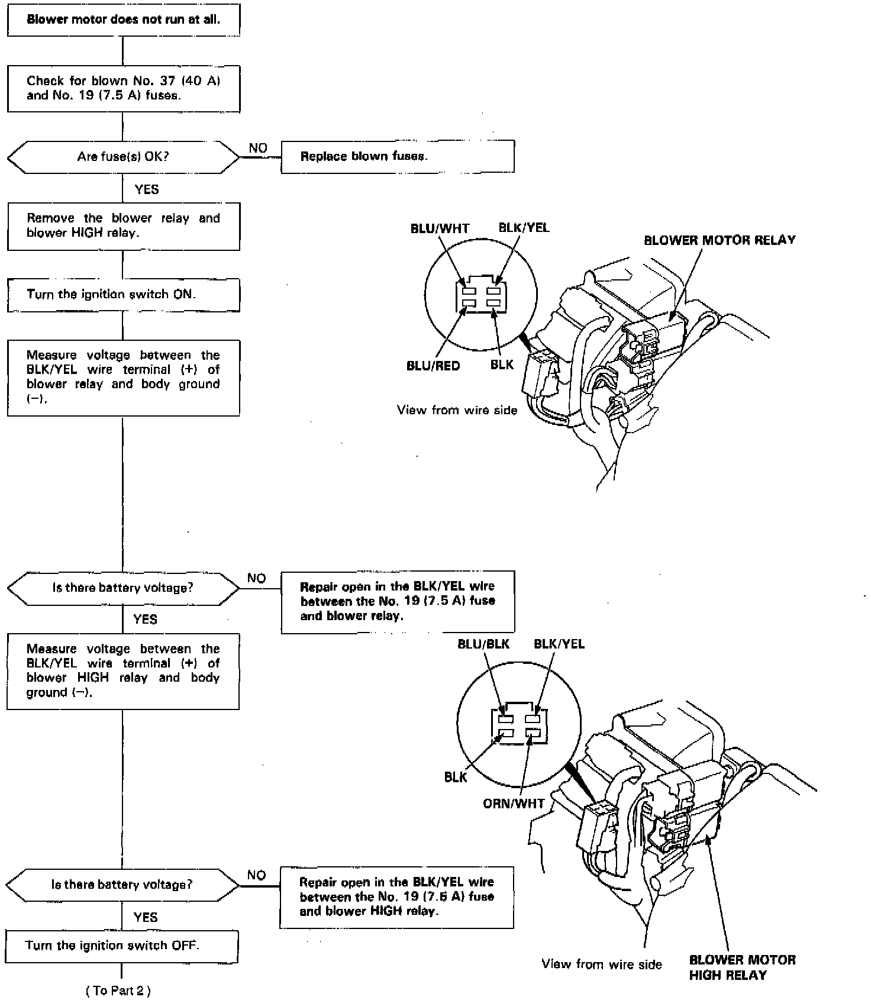
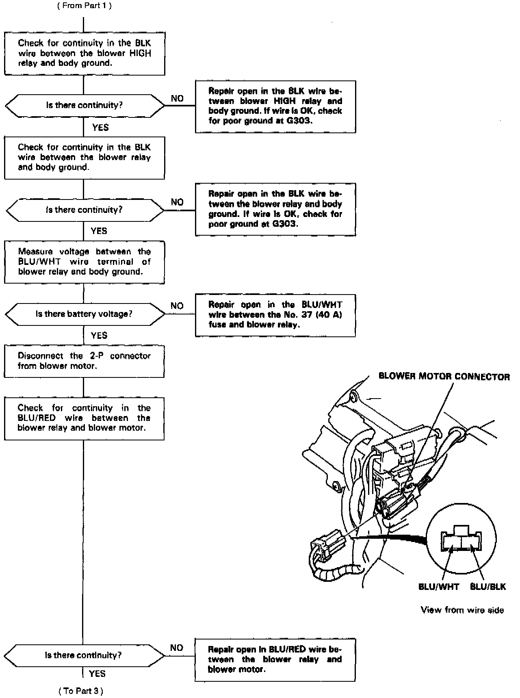
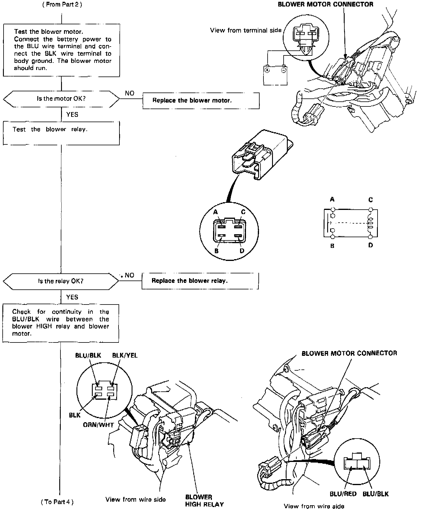
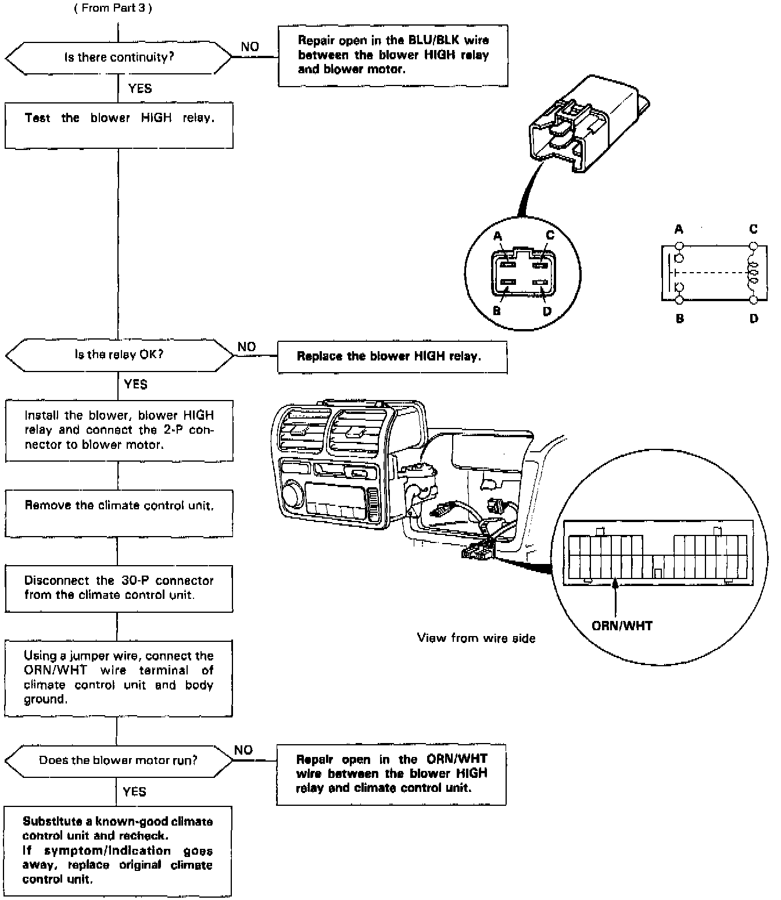

Operation CHARM
: Car repair manuals for everyone.
Home
>>
Acura
>>
1992
>>
Legend Coupe V6-3206cc 3.2L SOHC FI
>>
Repair and Diagnosis
>>
Heating and Air Conditioning
>>
Testing and Inspection
>>
Symptom Related Diagnostic Procedures
>>
- Diagnosis By Symptom - Automatic Climate Control
>>
Blower Motor - Inoperative
Blower Motor - Inoperative
Blower Motor Doesn't Run, Part 1 Of 4:

Blower Motor Doesn't Run, Part 2 Of 4:

Blower Motor Doesn't Run, Part 3 Of 4:

Blower Motor Doesn't Run, Part 4 Of 4:
